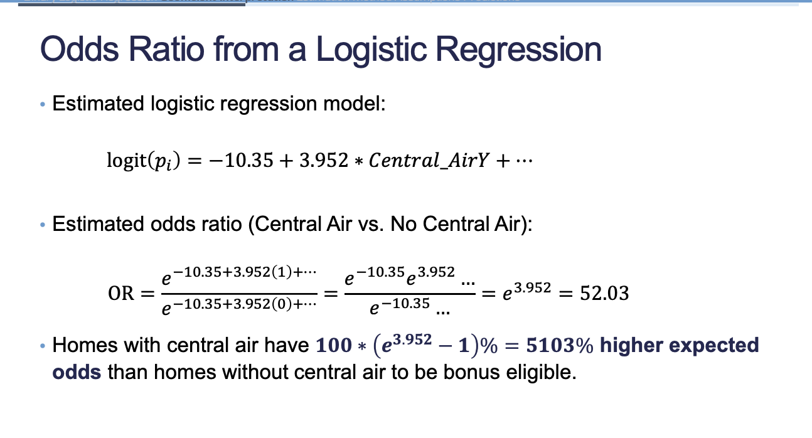

Code
library(AmesHousing)
library(tidyverse)
library(reticulate)
set.seed(123)
use_condaenv("msa")
ames <- make_ordinal_ames()
ames <- ames |>
mutate(Bonus = ifelse(Sale_Price > 175000, 1, 0))
train <- sample_frac(ames, 0.7)Binary classification is a supervised algorithm where we are trying to predict one of two target outcomes. Binary classification is one of the most common type of business problems that need solving.
We will use the Ames dataset again for binary logistic regression.
library(AmesHousing)
library(tidyverse)
library(reticulate)
set.seed(123)
use_condaenv("msa")
ames <- make_ordinal_ames()
ames <- ames |>
mutate(Bonus = ifelse(Sale_Price > 175000, 1, 0))
train <- sample_frac(ames, 0.7)ames = r.amesWhat is regression actually doing?
Modeling the expected response conditional on the predictors. For a binary response, \(y_i\), the expected value is the probability of the event:
\[ E(y_i) = P(y_i = 1) = p_i \]
Why can’t we model the following:
\[ p_i = \beta_0 + \beta_1x_{1,i} + \cdots + \beta_kx_{k,i} \]
Probabilities are bounded but linear functions can take on any value. Relationship between probabilities and X is usually nonlinear. Properties of OLS do not hold.
\[ p_i = \frac{1}{1 + e^{-z}} \]
import matplotlib.pyplot as plt
import numpy as np
x = np.linspace(-10, 10, 100)
z = 1/(1 + np.exp(-x))
plt.plot(x, z)
plt.xlabel("x")
plt.ylabel("Sigmoid(X)")
plt.show()
To convert back to a linear model, we use the logit function:
\[ \log(\frac{p_i}{1 - p_i}) = \beta_0 + \beta_1x_{1,i} + \cdots + \beta_kx_{k,i} \]
Relationship between parameters and logits are linear. Logits are unbounded.
With a \(\hat{\beta}\) change in the logit, we can interpret the change in odds as \(e^{\hat{\beta}}\) or as a percentage \(100 \cdot (e^{\hat{\beta}} - 1)\%\)
logit_model <- glm(Bonus ~ Gr_Liv_Area + factor(Central_Air), data = train, family = binomial(link = "logit"))
summary(logit_model)
Call:
glm(formula = Bonus ~ Gr_Liv_Area + factor(Central_Air), family = binomial(link = "logit"),
data = train)
Coefficients:
Estimate Std. Error z value Pr(>|z|)
(Intercept) -1.035e+01 6.422e-01 -16.12 < 2e-16 ***
Gr_Liv_Area 4.112e-03 1.962e-04 20.96 < 2e-16 ***
factor(Central_Air)Y 3.952e+00 5.180e-01 7.63 2.35e-14 ***
---
Signif. codes: 0 '***' 0.001 '**' 0.01 '*' 0.05 '.' 0.1 ' ' 1
(Dispersion parameter for binomial family taken to be 1)
Null deviance: 2775.8 on 2050 degrees of freedom
Residual deviance: 1808.8 on 2048 degrees of freedom
AIC: 1814.8
Number of Fisher Scoring iterations: 6import statsmodels.formula.api as smf
train = r.train
logit_model_py = smf.logit('Bonus ~ Gr_Liv_Area + C(Central_Air)', data=train).fit()Optimization terminated successfully.
Current function value: 0.440967
Iterations 8logit_model_py.summary()| Dep. Variable: | Bonus | No. Observations: | 2051 |
| Model: | Logit | Df Residuals: | 2048 |
| Method: | MLE | Df Model: | 2 |
| Date: | Tue, 05 Sep 2023 | Pseudo R-squ.: | 0.3484 |
| Time: | 14:15:03 | Log-Likelihood: | -904.42 |
| converged: | True | LL-Null: | -1387.9 |
| Covariance Type: | nonrobust | LLR p-value: | 1.064e-210 |
| coef | std err | z | P>|z| | [0.025 | 0.975] | |
| Intercept | -10.3546 | 0.642 | -16.124 | 0.000 | -11.613 | -9.096 |
| C(Central_Air)[T.Y] | 3.9519 | 0.518 | 7.629 | 0.000 | 2.937 | 4.967 |
| Gr_Liv_Area | 0.0041 | 0.000 | 20.959 | 0.000 | 0.004 | 0.004 |
Note that in the output the significance of the Central_Air factor is only saying that Central_Air is significantly different from the reference level (no central air).

In a business context, you don’t have to necessarily drill down into the specifics of the odds ratio. Your goal is to convey the magnitude of the odds ratio to create a strategy.
exp(cbind(coef(logit_model), confint(logit_model)))Waiting for profiling to be done... 2.5 % 97.5 %
(Intercept) 3.184558e-05 8.233966e-06 1.041852e-04
Gr_Liv_Area 1.004121e+00 1.003745e+00 1.004517e+00
factor(Central_Air)Y 5.203450e+01 2.058035e+01 1.620722e+02odds_ratio = np.exp(logit_model_py.params)
odds_ratioIntercept 0.000032
C(Central_Air)[T.Y] 52.034498
Gr_Liv_Area 1.004121
dtype: float64Working through math bckwards allows us to see what increase in square footage is needed for an expected doubling of odds:
\[ \text{Double Odds} = \frac{\log(2)}{\beta} \]
Any odds ratio equal to 1 has no association. Lower than 1 means that the group in denominator has higher odds of the event. Greater than 1 means group in numerator has higher odds of the event.